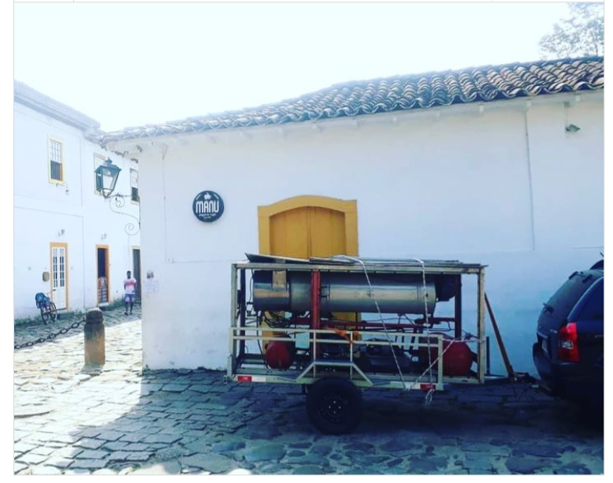

I
Entendendo a máquina
A história completa. Ciclo de refrigeração explicado sem jargão. Ciclo da água. Degelo por gás quente. (5 capítulos)
DOCUMENTO TÉCNICO · RELATO REAL · EDIÇÃO 2026
Um relato técnico e prático de construção doméstica de uma máquina Ice Tube, capaz de produzir até 2 toneladas de gelo por dia em condição favorável. Escrito por quem construiu e opera a própria há anos.
Pesquisou preço de máquina Ice Tube nova e quase caiu da cadeira — entre R$ 180 mil e R$ 250 mil.
Testou máquinas pequenas comerciais que não dão conta do recado, gastam muita energia e vivem quebrando.
Tentou máquina asiática importada e esbarrou em peças difíceis, suporte inexistente, baixa durabilidade.
Pensou em construir a sua, mas travou: não sabe quais componentes comprar, quais medidas usar, onde achar torneiro, como dimensionar.
Enfrentou filas longas de fabricantes, prazos absurdos de entrega e contratos cheios de dependência técnica.
Descobriu na prática que técnicos capacitados em gelo industrial são raros na sua região.
Eu passei pelos mesmos problemas anos atrás. E é exatamente por isso que escrevi este livro.
A HISTÓRIA POR TRÁS DESTE LIVRO
Precisava gerar renda com o que tinha. Resolvi fabricar gelo.
Comprei uma máquina usada num ferro-velho em Praia Grande/SP, a preço de sucata. Dirigi 120 quilômetros no caminho de volta e o motor do meu carro fundiu em Paraty.
Sem dinheiro para guincho nem conserto, anunciei a máquina no OLX ali mesmo. Vendi em menos de 24 horas. Paguei o conserto do carro, sobrou um pouco, voltei pra casa.
Dias depois, já com a cabeça mais fria, olhei de novo pra foto que tinha tirado em Paraty. Abri o Instagram, criei a conta @industrialmaquinasbr e publiquei em 21 de agosto de 2021 a foto como marco zero de um negócio que ainda não existia.
A partir daquele dia entendi duas coisas que mudaram minha vida: que existia mercado para máquinas de gelo industriais, e que quase ninguém anunciava em plataformas digitais.
Passei os anos seguintes como intermediário especializado, caçando oportunidades em OLX e Marketplace, apresentando para técnicos da minha rede. Aprendi conversando com dezenas de técnicos, estudando manuais de compressor sozinho.
Até que chegou o momento de construir a minha. Comprei o compressor alternativo, garimpei componentes, contratei torneiro, montei com minhas próprias mãos. A primeira máquina saiu por menos de R$ 35 mil.
A foto abaixo é real. O post do Instagram é público. Minha conta é verificada.

O QUE TEM DENTRO DO LIVRO
A história completa. Ciclo de refrigeração explicado sem jargão. Ciclo da água. Degelo por gás quente. (5 capítulos)
Todos os componentes comerciais, com especificações técnicas sem depender de marca: sistema frigorífico, água, elétrico. Lista completa de compra.
As 4 peças que exigem torneiro mecânico: evaporadora, cuba cortadora, tampa superior e os 28 bicos distribuidores em poliamida. Medidas detalhadas, instruções para o torneiro, erros a evitar.
Ordem correta de montagem, soldas TIG e brasagem cobre-aço, interligação frigorífica, hidráulica e quadro elétrico com comando de 2 tempos.
Teste de estanqueidade, vácuo, carga de refrigerante, ajuste dos tempos, o que observar nos primeiros ciclos.
Rotina operacional, manutenção preventiva, legalização no Brasil, formação de preço, canais de venda.
O que eu faria diferente hoje. Erros que cometi para você não repetir. Adaptações que reduziram custo. Segurança inegociável.
Conta verificada, com histórico real de anos de publicação desde agosto de 2021. Foto de Paraty, construção da máquina, máquinas intermediadas para clientes reais — tudo lá, em ordem cronológica.
Ver @industrialmaquinasbr no Instagram ↗Autenticidade acima de depoimentos. Antes de comprar, olhe quem escreveu.
EXPECTATIVA HONESTA · INVESTIMENTO REAL
Meu investimento em peças e serviços ficou abaixo de R$ 35 mil. Isso só foi possível porque eu tinha:
Se você está começando do zero — sem acesso a peças usadas, comprando tudo novo, contratando toda a mão-de-obra — o orçamento realista fica entre R$ 40 mil e R$ 60 mil.
Prefiro te contar isso agora do que você descobrir no meio do caminho.
DEPOIS DA COMPRA
Respondo pessoalmente. É o canal que me permite responder com qualidade, sem a zona dos grupos.
marcos@industrialmaquinas.com.brAnúncios de atualizações, novas versões, fornecedores que identifiquei, mudanças de legislação. Canal unidirecional — só eu publico. Não é grupo.
Entrar no canal ↗Compra única. Acesso vitalício. Se o livro for atualizado, você recebe a versão nova sem pagar nada a mais.
Solicite reembolso em até 7 dias direto na Kiwify — plataforma de pagamento reconhecida por segurança total. Sem perguntas, sem burocracia.
Leia o livro inteiro nesse prazo se quiser — se não servir para você, o reembolso é automático.
INVISTA HOJE NO SEU PROJETO
De R$ 242,71 por apenas
R$139,90
ou parcelado no cartão · pagamento seguro via Kiwify
Compra única · sem mensalidades · pagamento 100% seguro
PERGUNTAS FREQUENTES
Não. Mas você precisa de acesso a um técnico para comissionamento e carga de refrigerante. O livro explica o que comprar, como especificar, como montar — a parte frigorífica final é feita com profissional habilitado.
Varia muito. Minha primeira levou meses porque eu estava aprendendo e garimpando peças. Alguém comprando componentes novos, com mão-de-obra pronta, consegue em 4 a 8 semanas.
NR-13 depende de projeto registrado por engenheiro habilitado e acompanhamento profissional. O livro explica a exigência; você contrata o engenheiro para regularizar. Isso vale para qualquer máquina de pressão.
Sim, com pequenos ajustes de carga e válvula. O livro usa R404A como referência principal, mas explica o phase-down e alternativas modernas.
As 4 peças podem ser encomendadas de um torneiro em qualquer cidade e enviadas por transportadora. O livro inclui o documento único para entregar ao torneiro com todas as medidas e especificações.
Até 2 toneladas/dia em condição favorável (dia frio, água fria, ambiente ventilado). Média anual realista entre 1,2 e 1,8 ton/dia.
Sim, por e-mail, individualmente. Canal no WhatsApp só para avisos e atualizações.